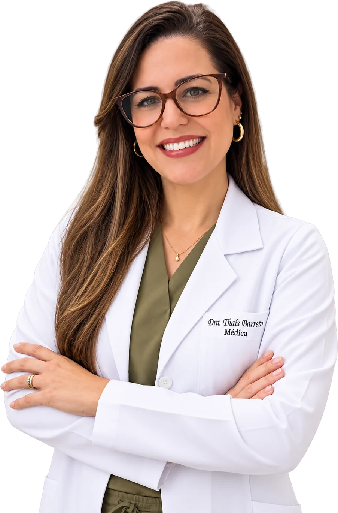
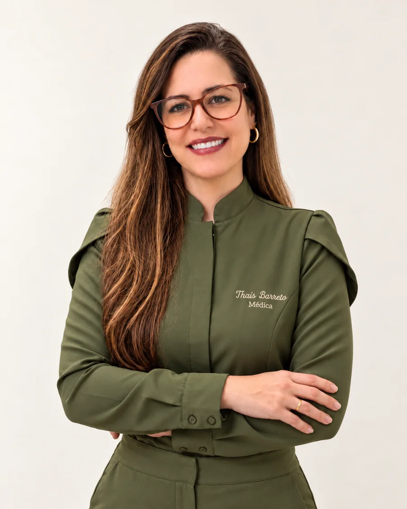

100% online
Consulta médica completa por videochamada, com privacidade, segurança e comodidade.
Atendimento médico online com abordagem integrativa para saúde mental, dor crônica e avaliação em Medicina Canabinoide, unindo escuta, ciência e individualização do cuidado.

A Telemedicina permite realizar uma consulta médica completa por videochamada, com privacidade, segurança e comodidade, sem a necessidade de longos deslocamentos.
Consulta médica completa por videochamada, com privacidade, segurança e comodidade.
Atendimento mediante agendamento prévio pelo WhatsApp, de segunda a sábado, das 08h às 20h.
Pacientes de diferentes regiões do Brasil e brasileiros no exterior, conforme as condições aplicáveis ao atendimento médico.
Áreas de atuação
Existem momentos em que ansiedade, estresse, alterações do sono e dores persistentes começam a interferir na rotina, no trabalho e na qualidade de vida.
Acompanhamento médico voltado à avaliação de sintomas como ansiedade, estresse, alterações do sono, sobrecarga emocional e outros fatores que podem comprometer o bem-estar e a rotina.
Avaliação médica de quadros de dor persistente, considerando sintomas, histórico clínico, rotina, sono, fatores emocionais e impacto da dor na qualidade de vida.
Avaliação individualizada para verificar quando a Cannabis Medicinal pode ou não fazer parte de uma estratégia terapêutica, sempre respeitando critérios clínicos e a legislação brasileira.
Uma abordagem que busca compreender diferentes fatores relacionados à saúde do paciente, integrando avaliação clínica, estilo de vida, saúde emocional e estratégias terapêuticas individualizadas.
Abordagem
A proposta do atendimento é compreender cada paciente de forma individualizada, considerando não apenas a queixa principal, mas também fatores que podem estar relacionados ao seu bem-estar, como rotina, sono, estresse, saúde emocional e impacto dos sintomas na qualidade de vida.
A Dra. Thaís une experiência em Medicina Integrativa, formação em Saúde Mental e certificação em Medicina Canabinoide a uma prática médica acolhedora, moderna e baseada em avaliação clínica.
Tempo para compreender a história, as queixas e as necessidades de cada paciente.
As possibilidades terapêuticas são avaliadas conforme o contexto clínico de cada pessoa.
Decisões médicas baseadas em avaliação, acompanhamento e critérios clínicos.
Cada plano de cuidado começa pela sua história: escuta, avaliação clínica e acompanhamento individualizado, no seu tempo.
Medicina Canabinoide
A Medicina Canabinoide pode representar uma possibilidade terapêutica para determinados pacientes e condições clínicas, mas sua utilização depende de avaliação médica individual.
A Dra. Thaís possui certificação em Medicina Canabinoide pela UNIFESP e realiza avaliação clínica para compreender o histórico do paciente, tratamentos anteriores, sintomas, necessidades e possíveis indicações.
Certificação em Medicina Canabinoide · UNIFESP

Sobre
Médica · CRM-BA 44128
Médica com mais de 12 anos de atuação em Medicina Integrativa, a Dra. Thaís Barreto possui pós-graduação em Saúde Mental e certificação em Medicina Canabinoide pela UNIFESP.
Sua prática médica é baseada em acolhimento, escuta e individualização, buscando compreender cada paciente dentro de seu contexto e avaliar estratégias de cuidado de maneira responsável.
Seu atendimento é realizado por Telemedicina, oferecendo maior praticidade para pacientes que possuem rotina intensa ou desejam receber acompanhamento médico no conforto e privacidade de onde estiverem.
Passo a passo
Clique no botão de WhatsApp e solicite seu agendamento.
A equipe orientará sobre horários disponíveis e informações necessárias.
No horário agendado, a consulta é realizada por videochamada, com espaço para avaliação, escuta e esclarecimento de dúvidas.
Após a avaliação, a médica definirá as condutas adequadas ao seu caso e, quando necessário, poderá emitir documentos e prescrições digitais conforme critérios médicos.
Atendimento particular
Quando necessário, é disponibilizada nota fiscal ou recibo médico para que o paciente possa verificar diretamente com seu plano ou convênio de saúde a possibilidade de solicitação de reembolso, conforme as regras da operadora.
A consulta é realizada online, por videochamada e mediante agendamento prévio. O atendimento permite avaliação médica, orientação e acompanhamento sem necessidade de deslocamento.
Não. A indicação depende exclusivamente da avaliação médica individual, do histórico clínico, das necessidades do paciente e dos critérios médicos aplicáveis.
Quando houver indicação médica, poderão ser emitidas prescrições e documentos digitais conforme as regras e critérios aplicáveis.
O atendimento é particular. O paciente poderá receber nota fiscal ou recibo médico para verificar com seu plano de saúde eventual possibilidade de reembolso.
O agendamento é realizado diretamente pelo WhatsApp.
De segunda a sábado, das 08h às 20h, mediante agendamento prévio.
Agendamento
Converse com a equipe e agende sua consulta online com a Dra. Thaís Barreto.
Agendar minha consultaAtendimento particular, Telemedicina, Segunda a sábado
Documento em preparação. O texto completo será publicado nesta página.